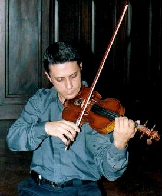

Tema Enero-Febrero de 2006
El sol en su cenit
| Entrevista a Hernán Testa |
Hernán Testa, representa una de las jóvenes figuras penetrantes en el medio de la música clásica de la Ciudad de Córdoba (Argentina), e integra el Cuarteto de Cuerdas "Numen" ( Recomiendo visitar www.cuartetonumen.com.ar)
Cuenta con 30 años de edad y comenzó
a estudiar Violín a los 4, en la Universidad Nacional de Córdoba
de su país natal, por el método Suzuki.
Proveniente de familia de artistas, heredó de su abuelo el segundo violín
de su carrera que aún conserva; dado que el primero debía adaptarse
a la corta edad con que se inició y actualmente ejecuta sus conciertos,
con uno de origen italiano de principios del siglo pasado.
También su madre y uno de sus hermanos, están
dedicados al arte; por lo que éste, a través del violín,
ha sido su compañero de vida. De este modo, cuando concluyó el
ciclo de educación secundaria, tenía muy clara su vocación
en este sentido.
Al paso por el Conservatorio Provincial de Música, donde conoció
al pianista Gustavo Zaka (Ver tema de noviembre/05)
se preparó posteriormente en la Provincia de Buenos Aires, con el Profesor
Szymsia Bajour- ya fallecido- y luego en Madrid (España), donde cumplimentó
la principal formación profesional (septiembre de 1996 al 2001); etapa
que marcó un antes y un después en su trayectoria. Aquí,
dos artistas de origen ruso le brindaron la posibilidad de una performance especial
: Polina Kotliarskaia a nivel personal y Olga Vilkomirskaia en lo relativo a
la idoneidad. Estas circunstancias le hicieron poner en dudas regresar a Argentina,
ya que se sentía muy cómodo por aquellos lugares.
"Pienso que en Europa, existen más oportunidades
para los jóvenes interesados en prepararse en música clásica.
Allí, la tradición cultural es más sólida y extensa.
Las tradiciones como por ejemplo el teatro, la orquesta, etc., con llevan valores
arraigados en los pueblos, de lo contrario, el acervo cultural , se convierte
en un híbrido.
Desgraciadamente en Argentina, no existe una política con continuidad
en este ámbito. No hay proyectos de largo alcance; más bien se
observan -islas-. Invertir en cultura, no implica un rédito monetario
inmediato, por lo que no se entiende al arte como un aspecto de la política,
como una necesidad del hombre. Se busca lo fácil y no el perfeccionamiento...
Por ejemplo, en Brasil hace 36 años, que se dicta un curso anual donde
cualquier estudiante de música puede optar por su realización
en enero o en julio....El curso se hace, sin mella del gobierno de turno..."
" Me desenvuelvo en algo que me gusta y disfruto sintiendo el reconocimiento del público y de mis colegas. Esta profesión, como todas, debe entenderse a modo de "un trabajo"; cuesta la compresión de este concepto: Esto es, que no se trata sólo de idealismo; es una labor que se cobra. Para ofrecer una hora de concierto, se requiere muchos años de formación previa..."
"Haciendo música, me siento privilegiado;
demanda una sensibilidad especial. No obstante, escucho todo tipo de expresión
en este sentido...
El ritmo le es algo intrínseco; mientras que la melodía, es posterior.
Aquella definición: - La música es el arte de
combinar los sonidos- resulta estrecha; pues aquélla,
es mucho más abarcativa...: Implica gente, sensibilidad e imaginación.
Y el -momento- es -el ahora-.
Aquí se observa la diferencia, por ejemplo con el pintor, quien plasma
una obra que podrá ser admirada por tiempo indefinido... El concierto
es -ahora- en el momento-. Terminó el espectáculo y 5 minutos
después, ya dejó de ser..."
"La música influencia en forma penetrante en el estado anímico
de la gente. Se trata de un proceso dinámico y puede sugerir cuestiones
de diferente índole. El oyente no es pasivo, no es -un saco de aserrín-
o una máquina. Se emociona; sus sentires pueden variar en distintas direcciones
y aún evolucionar desde un estado, al opuesto contrario, durante el concierto.
También, el artista no implica algo estático. Es cierto, que debe
poseer una capacidad técnica como herramienta indispensable, más
allá de su aliento. Puede echar mano a la creatividad; pero el arte,
no es azar..."
No es compositor; más bien difruta y re-elabora lo realizado por otros; le añade "su visión"
Directamente relacionado a la música y a
un nivel muy personal, le interesa todo lo oriental; particularmente las Artes
Marciales: Ha practicado "kung fu", "tai chi chuan", "chicung"
y "capoeira" entre otros, considerándolas muy útiles
tanto en lo corporal como lo mental, a la hora de ordenar las cosas...
En lo deportivo, juega al "paddle".
Hernán, relata su vida afectiva de pareja,
como de desencuentros permanentes:
"No se da lo que yo necesito; reconozco, enseguida percato lo que me desagrada.
Sí, he estado enamorado algunas veces; pero ya fuera por la otra persona
o por terceros, la relación se truncó. Tal vez no he tenido suerte
en este aspecto...Desecho estar con alguien sólo por contar con una compañía...deseo
compartir mi vida y hay aspectos, que pueden parecer como -chiquititos- pero
no se entienden fácilmente, cuestiones particulares de cada profesión
los cuales no se pueden explicar"
Algunas reflexiones me cupieron
con posterioridad a la entrevista que mantuve con este joven de mirada
clara y profunda, quien ha sellado cada instante de su vida con la autencidad
que le caracteriza: Una persona concientemente sabia, valora lo positivo y lo negativo de las cuestiones vitales de su existencia. La búsqueda de equilibrio es su derrotero y la percepción de la particularidad de los ciclos o tiempos que se suceden, una característica fundamental. Por ello ha vislumbrado el camino en virtud de sus disposiciones y virtudes fundamentales; lo abona y se prepara para los altibajos que implica transitarlo. No obstante sabe que el caminante es él mismo con su soledad y un cuántum de fe que lo acompaña. Con la vista puesta en el infinito, prepara el viaje e impregna con su aroma, lugares personas y situaciones. Como quien está de pie en la cima de un monte pronunciado, con las plantas firmes en tierra, observa tanto el precipicio como el horizonte y elige la vía más segura, mientras vigila su paso hacia este último... (G.M.C.) |
 |
e-mail: hernantesta@yahoo.es
 Ir a síntesis curricular del
artista
Ir a síntesis curricular del
artista